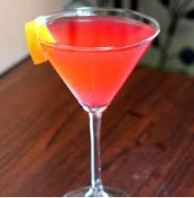

O Cosmopolitan é um cocktail moderno e elegante que se tornou icónico através da cultura popular.
Método de Preparo
GuarniçãoDecore com uma espiral de limão. |
 |
A origem do cosmopolitan é disputada, com algumas histórias rastreando-o desde a comunidade gay de Provincetown na década de 1970, movendo-se para oeste para Cleveland e Minneapolis, e chegando a São Francisco. De lá, moveu-se de volta para leste, com a receita contemporânea sendo misturada em 1989 na cidade de Nova York. Tornou-se conhecido na série "Sex and the City", bebido por Carrie Bradshaw (Sarah Jessica Parker).